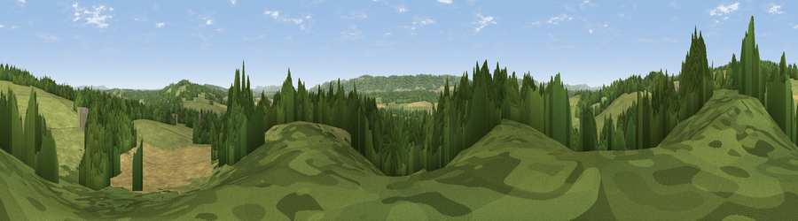

Viewpoint near Lodsworth
#26837 in England · top 45% of its area beats it · near LodsworthThe view, rendered

A 360° render of this exact spot computed from the terrain model, tree cover and land cover — summer colours, afternoon light, calibrated against photographs of famous viewpoints. Real trees, hedges and buildings will differ in detail.
The panorama
Grey silhouette: terrain skyline in each direction (720 bearings, Earth curvature and refraction included). Dashed green: skyline with trees (+15 m) and buildings (+8 m) as obstacles. Blue strip: how far the ground is visible on each bearing.
Where the view opens
Wedge length = distance to the farthest visible ground on that bearing (vegetation-aware). Rings at 10, 25 and 50 km.
What fills the view
42% woodland · 39% grassland · 19% cropland ·
Angular shares of the visible panorama (visual magnitude), not map area. Landscape diversity 0.47 (0–1 Shannon).
Key numbers
More beautiful places nearby
The staircase of upgrades: each row has a higher view potential than everything closer. Driving times are estimates from straight-line distance, calibrated against real road routing — check an actual route before setting out.
| Place | Direction | Drive | Score |
|---|---|---|---|
| Viewpoint near Lodsworth | N · 2 km | ~5 min | 61.2 |
| Viewpoint near Lodsworth | NNW · 2 km | ~6 min | 65.1 |
| Viewpoint near Heyshott | SSW · 6 km | ~13 min | 74.8 |
| Viewpoint near Fernhurst | N · 7 km | ~14 min | 75.1 |
| Viewpoint near Cocking | SSW · 7 km | ~14 min | 77.6 |
| Viewpoint near Cocking | SSW · 7 km | ~14 min | 78.3 |
| Linch Down | SW · 9 km | ~18 min | 85.2 |
| Beacon Hill | WSW · 12 km | ~23 min | 85.8 |
50.99610, -0.68790 · source: screening · position refined by local search. Computed location — check access rights before visiting.